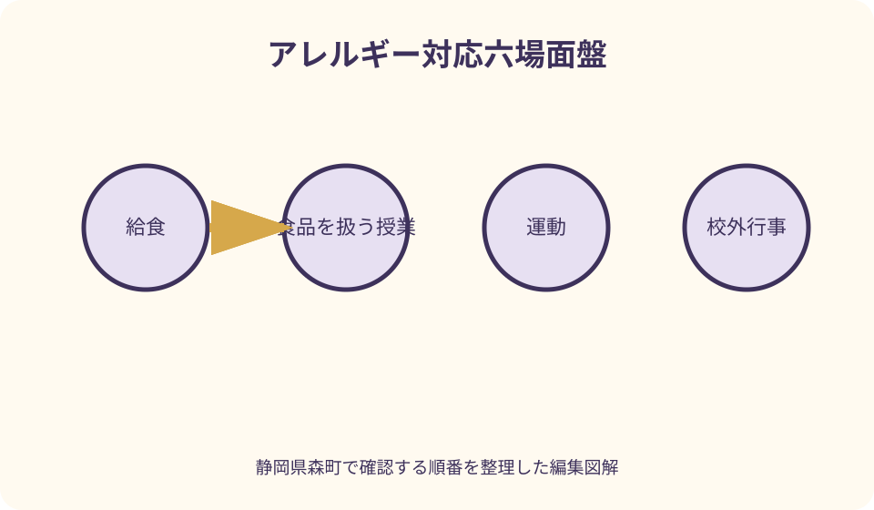
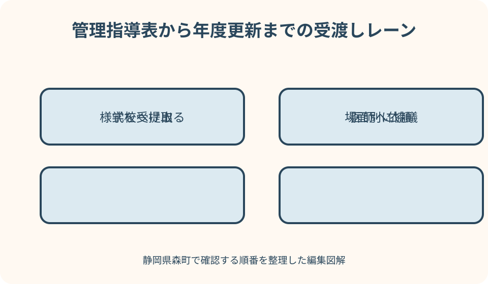

学校・就学・家庭記録｜最終確認 2026-08-10
静岡県森町の学校へアレルギー情報を伝える｜管理指導表・給食・緊急薬
アレルギー情報は「原因食品があります」という申告だけでは足りません。医師が確認する診断・治療情報、学校生活管理指導表、給食での対応、食品を扱う授業や行事、緊急時の薬、年度途中の更新は、それぞれ確認する相手と時期が違います。森町の入学・学校窓口と、静岡県教育委員会、文部科学省の資料を照合し、学校との協議に使える準備表へ落とし込みます。

編集イラスト結論：申告、医師の記載、学校との協議を三段階にする
最初の段階は、保護者から学校へアレルギー疾患があり相談を希望する旨を伝えることです。食品名や薬を電話で列挙して終わらず、学校指定の書類、提出期限、面談担当、主治医へ渡す用紙を確認します。
次の段階は、医師が診断、治療、学校生活上の留意点を所定の様式へ記すことです。家庭で検査値や除去品目を解釈し直さず、現在の状態を診ている医師へ学校生活の場面を説明します。
三段階目は、提出情報を基に学校と具体的な取扱いを協議することです。給食、授業、校外活動、緊急薬を一括して「対応できますか」と尋ねず、場面ごとに決定・未決定・再確認日を残します。
早く書類を出しても、症状が起きないことや希望どおりの方法を保証するものではありません。情報を更新し、本人を含む関係者が同じ手順を理解できる状態を目指します。
森町の入学案内から学校相談へつなぐ
森町は、来春小学校へ入学する子どもの就学時健康診断を十月・十一月に実施し、対象家庭へ通知すると案内しています。健康診断の日程と、アレルギー対応の学校面談は同じ手続とは限りません。
健診前後に相談を始めたい家庭は、森町学校教育課へ、就学予定校への連絡時期と提出書類の入口を尋ねます。学校が決まっていない段階で個別対応を確約してもらうのではなく、次に確認する先を得ます。
森町公式の学校一覧には、町立小中学校の名称、所在地、連絡先が掲載されています。入学通知などで就学先を確認したうえで、学校へ連絡し、古い電話番号や知人経由の伝言に頼りません。
転校の場合は、転入・転居の学校手続と同時に、アレルギー書類の引継ぎ時期も確認します。前籍校の管理指導表がそのまま有効か、改めて提出が必要かを新しい学校へ尋ねます。
診断情報は現在の医療情報と家庭の記録を分ける
診断欄には、疾患名、原因として確認されている物、現在の治療、処方薬、最後の受診日、次回受診予定を置きます。過去に疑っただけの食品は、診断済みの項目と別にします。
家庭の記録には、症状が出た日時、食べた物や活動、現れた症状、受診・薬の使用、その後の経過を書きます。この記録は診断そのものではなく、医師へ状況を伝える資料です。
血液検査などの数値を保護者が学校対応へ直接変換しません。検査結果と実際の症状の扱いは医師へ確認し、学校には医師が記載した指示と家庭で観察した事実の出所を示します。
ぜん息、アトピー性皮膚炎、アレルギー性結膜炎・鼻炎など食物以外の疾患も、運動、屋外活動、清掃、動物や植物を扱う場面に関係することがあります。該当場面を主治医へ具体的に相談します。
学校生活管理指導表の役割を理解する
静岡県教育委員会の保護者向け資料は、気管支ぜん息、食物アレルギー・アナフィラキシーがあり、学校生活で特別な配慮や管理が必要な場合に、県版の学校生活管理指導表を活用する考え方を示しています。
管理指導表は、保護者が希望を書くアンケートとは異なり、医師が疾患の状態や学校生活上の留意点を記載する書類です。学校から最新様式を受け取り、受診予約前に記入依頼の方法を医療機関へ確認します。
文部科学省は、管理指導表などを基に学校と保護者が協議して取組を行う流れを示しています。表を提出した時点で、すべての対応内容が自動的に決定するとは考えません。
提出には作成費や日数がかかることがあります。入学直前まで待たず、学校の提出期限、医療機関の発行期間、再受診の要否を逆算して予定表へ入れます。
管理指導表と保護者面談メモを混ぜない
管理指導表は医療情報の軸、保護者メモは日常の軸として並べます。本人が違和感をどう表すか、これまで助けになった声掛け、症状後の疲れなどは、診断欄へ無理に書き込みません。
学校側の回答は三つ目の欄に置きます。給食での方法、薬の保管、職員間の共有、行事前の再確認など、協議で決まった内容を医師の指示と同じ色で記録しないようにします。
三つの欄に食い違いが見つかったら、その場でどれかを消すのではなく、確認先と期限を書きます。医療事項なら主治医、校内手順なら学校というように戻す先を決めます。
原本へ保護者が注釈を書き加える前に、学校へ記載方法を尋ねます。補足が必要なら別紙の表題、作成者、作成日を明記し、どの書類と組になるかを示します。
給食は献立確認から片付けまで場面を分ける
給食の相談は「除去できますか」の一問で終えません。献立・原材料情報をいつ誰が確認するか、変更時の連絡、配膳、座席、喫食中、片付け、欠席時を順番に見ます。
文部科学省の給食対応指針は、学校設置者、学校、調理場が方針や手順を整える際の基本的な考え方を示しています。実際の森町での方法は、入学予定校から最新の説明を受けます。
原因食品を本人が皿から取り除く方法を、家庭の経験だけで選ばないでください。学校の体制、誤食の可能性、本人の年齢、医師の情報を基に協議される事項です。
代替食を持参する場合も、容器、名前、保管、受渡し、温度管理、忘れた日の対応を確認します。家庭で用意すれば必ず学校で扱えるとは限らず、先に学校の手順を聞きます。

献立表は保護者確認と学校確認の境界を決める
詳細献立や原材料表が配られる場合は、受取日、確認者、返信期限を家庭カレンダーへ入れます。保護者二人が別々に修正して異なる版を提出しないよう、担当と最新版を一つにします。
加工食品の原材料変更や献立変更が起きたとき、どの方法で連絡が来るかを確認します。前年の製品、ウェブで見つけた一般情報、パッケージ写真だけで当日の給食を判断しません。
確認欄へ印を付ける意味が、閲覧済みなのか、喫食可の判断なのか、代替持参の依頼なのかを学校と合わせます。家庭内の記号をそのまま学校へ持ち込まないようにします。
回答期限に間に合わない、原材料が確定しない場合の連絡先も先に聞きます。不確かなまま「たぶん食べられる」と返さず、未確認の扱いを学校へ相談します。
食品を扱う授業は給食とは別に確認する
家庭科や生活科、理科、図工などで食品や植物を扱うことがあります。食べる予定がなくても、触れる、粉が舞う、器具を共有する可能性を学校からの年間予定で確認します。
牛乳パック、卵の殻、小麦粘土、豆類など教材の例は固定ではありません。インターネット上の注意一覧を学校の実施内容とみなさず、具体的な授業が決まった時点で再確認します。
本人だけ別活動にするか、教材を替えるかを家庭で決定しません。教育上のねらい、医師の留意点、校内で可能な方法を学校と話し、本人にも説明します。
授業担当が担任以外の場合、情報がどう共有されるかを尋ねます。保護者から各教員へ個別に連絡するのか、学校内で統一して伝えるのかを明確にします。
遠足・校外学習・宿泊行事は事前会議を置く
校外では食事の提供者、移動時間、医療機関までの距離、薬の携帯者が通常日と変わります。行事の案内が出たら、通常の対応表をコピーするだけでなく差分を確認します。
弁当、おやつ、調理体験、見学先の試食、土産の配布など、食べる場面を時系列で並べます。予定外の提供があった場合に誰が判断するかも学校へ確認します。
宿泊では入浴、就寝、夜間の連絡、薬の保管、翌朝の体調確認が加わります。本人が薬を持つ場合も、紛失・期限・夜間症状への手順を話し合います。
参加可否をこの記事から判断することはできません。医療上の確認が必要なら行事内容を主治医へ示し、学校とは代替や同行を含む可能な方法を協議します。
体育・運動時の情報は条件で書く
運動誘発の症状がある場合は、「運動不可」と一括せず、運動の種類、強度、気温、季節、準備運動、発症した時間を医師へ伝えます。学校への留意点は管理指導表の記載を確認します。
校庭、体育館、プールでは、環境と使用物品が異なります。花粉、ほこり、塩素など気になる条件がある場合も、原因と決めつけず受診時に相談します。
休む、見学する、薬を使うなどの判断を誰がどの時点で行うかは、本人の年齢と医師の情報を踏まえて学校と確認します。本人へ無理な自己判断を負わせません。
運動会や部活動は通常授業より時間が長く、保護者が校内にいる場合でも学校の手順が基本になります。当日の薬や連絡役を直前に変更しないよう打合せます。
緊急薬は保管・使用・連絡を一本の線にする
薬の準備表には、名称、剤形、使用条件、保管温度、置き場所、携帯者、有効期限、交換日、使用後の扱いを記します。医師の指示と薬剤の表示を基にし、通称だけで共有しません。
アドレナリン自己注射薬を含む緊急薬については、本人が携帯するか、学校が保管するか、校外活動で誰が持つかを協議します。学校へ預ければ全場面で自動的に届くとは限りません。
使用条件の理解は、保護者の説明だけで済ませず、医療機関の書面や学校が採用する公的資料と合わせます。記事中の要約を個別の投与指示として使わないでください。
使用後は救急要請、保護者連絡、医療機関受診、薬の補充などが続きます。連絡がつかないときも含め、学校が取る手順を面談で聞き、家族側の迎え担当を決めます。
本人が症状を伝える短い言葉を準備する
子どもが使う表現を記録します。「のどが変」「息がしづらい」「口がかゆい」など、これまで実際に言った言葉と、そのとき起きたことを結びます。
本人には、我慢して食べる、友人の食品と交換する、薬を隠れて使うことを避け、異変があれば近くの大人へ知らせる練習をします。怖がらせるだけの説明にしません。
低学年では食品表示を本人だけに読ませ、最終判断を任せる計画にしません。成長に応じてできることを増やしつつ、大人の確認体制を別に持ちます。
友人へどこまで伝えるかは本人の気持ちを聞き、学校とも相談します。周囲が知ることで助けになる情報と、広く共有する必要がない診療情報を分けます。
面談では一日の流れを使って確認する
面談資料の横軸を、登校、朝、授業、給食、清掃、体育、放課後、下校にします。各場面に原因との接触可能性、本人の行動、教職員へ頼むことを置きます。
学校側には、管理指導表の受取担当、校内の検討時期、保護者へ回答する日、年度途中の変更窓口を尋ねます。提出しただけで検討状況が分からない状態を避けます。
給食対応、薬の管理、緊急時連絡は、決まった項目を保護者が復唱します。専門用語や校内略称が分からなければ、その場で意味を確認します。
未決定事項には、確認先と次回日を付けます。「検討します」という回答を否定せず、いつ、誰から、どの方法で連絡を受けるかを合わせます。
個人情報は緊急時の共有と平常時の保管を分ける
管理指導表には病型、治療、薬など慎重に扱う情報が含まれます。学校で誰が閲覧し、どこへ保管し、異動する教職員へどう引き継ぐかを確認します。
文部科学省は個人情報に留意しつつ、緊急時に教職員が閲覧できる管理の必要性を示しています。共有を一切しない希望だけでは、緊急対応との両立が難しくなる可能性があります。
保護者用ファイルでは、学校提出の写し、医療機関の原本、献立確認、面談記録を分冊します。暗証番号や無関係な家族の診療情報を同じクラウドフォルダーへ置きません。
写真や書類を家族チャットへ送る場合は、送信先と削除時期を確認します。学校の連絡アプリへ載せてよい情報か分からないときは、指定された提出方法を尋ねます。

年度更新と症状変化の更新を分ける
管理指導表は、疾患の状態や学校での管理が続く間、学校から年度ごとの提出案内が行われることがあります。実際の頻度と期限は、森町の学校が示す最新の説明を確認します。
年度更新を待たずに、診断、除去品目、薬、使用条件、連絡先が変わった場合の届出方法を入学時に聞きます。口頭で担任へ伝えただけで全関係者へ反映したと考えません。
新しい薬を学校へ持参するときは、旧薬の回収、期限、表示、書類の更新を一組で行います。新旧が同時に残る期間を作らない方法を学校と相談します。
進級、クラス替え、転校、校外行事の前には、共有相手と保管場所が変わっていないか確認します。家庭の更新表にも、学校から確認済みの印と日付を残します。
早めに準備する良い点
良い点は、医療機関へ管理指導表を依頼する時間と、学校が校内で検討する時間の両方を確保できることです。入学式直前の一回の説明に全判断を集中させずに済みます。
給食だけに目が向いていた家庭も、教材、体育、遠足、放課後など別の接触場面を洗い出せます。本人の一日を軸にすることで、書類の項目が実際の行動へつながります。
緊急薬の期限や置き場所を家族も再確認でき、学校と家庭で呼び方が異なる箇所を早く見つけられます。認識差を発症時に初めて知る可能性を減らせます。
本人も、症状を言葉にして大人へ伝える練習ができます。自己管理を丸投げせず、できる行動と大人が担う確認を分けられることが重要です。
アレルギー案内へ注文したい点
注文したい点は、町の入学案内だけでは、管理指導表の入手、給食の確認、校外活動、薬の預かりまでを一続きで把握しにくいことです。学校からの個別案内を待つ項目が多くあります。
県や国の資料は詳しい一方、家庭が最初に学校へ何を尋ねるかが分散しています。様式、期限、面談、回答、更新を一枚の工程として案内されると準備しやすくなります。
「対応」という言葉だけでは、除去、代替、持参、見守り、情報提供のどれを指すか分かりません。家庭も学校も、具体的な場面と行動へ言い換えて確認する必要があります。
公的資料に沿って準備しても、個々の希望がそのまま実施されるとは限りません。できる・できないの結論だけでなく、代替案と見直し時期が説明されることが大切です。
代案・結論：書類待ちでも相談日を先に置く
医療機関の予約が先で管理指導表がまだない場合も、学校へ相談開始日を連絡します。提出予定、現在の診断情報、入学までに確認したい場面を伝え、暫定資料の扱いを尋ねます。
希望する給食対応が難しいと分かったら、家庭だけで欠食を決めず、弁当持参、部分持参、日ごとの扱いなど学校が検討できる選択肢を聞きます。医療上の確認が必要な点は主治医へ戻します。
面談へ本人が参加しにくい場合は、事前メモ、短時間の同席、後日の説明などを学校へ相談します。本人の意向を聞かないことと、無理に全時間参加させることの二択にしません。
結論は、提出物をそろえることだけがゴールではありません。診断情報が学校の一日の手順へ変換され、変更があれば再び協議できる連絡線を作ることが目的です。
大石の視点：給食の評判では個別対応を判断できない
住まい探しで学校給食の評判を聞いても、個別のアレルギー対応がどうなるかは分かりません。私は、契約判断に重要なら、就学先を確認した後に学校へ正式な相談時期を尋ねるべきだと考えます。
医療機関までの距離も、緊急時の結果を約束する指標ではありません。日常の通院手段、学校から保護者への連絡、迎えられる人、救急時の学校手順を別々に確認します。
不動産会社は、除去食、薬の使用、校内体制について保証する立場ではありません。物件資料の学校名から推測せず、教育委員会と学校の一次情報へ戻します。
家を選ぶ比較表には、学校の優劣ではなく、相談済みか、必要書類は何か、通院にかかる時間、家族の更新担当は誰かを書きます。暮らしの実務として確認可能な項目へ置き換えます。
記事固有のアレルギー対応六場面盤
円盤の中心に本人を置き、周囲を給食、授業、運動、行事、放課後、緊急時の六場面に分けます。各場面へ原因との接触、本人の行動、教職員の確認、薬を記します。
外周には、保護者、主治医、学校、調理関係者という情報源を置きます。どの記載を誰に確認したか線でつなぎ、家庭の推測だけの項目を見つけます。
色は、決定済み、確認中、行事前に再確認の三色に限定します。赤を一律の危険色にせず、凡例を家族と学校で読み合わせます。
円盤の裏面には、管理指導表の作成日、学校面談日、薬の期限、年度更新、症状変化時の連絡先を時系列で置きます。場面と更新を一つの図で往復できます。
学校へ送る初回相談文と面談後記録
初回は「入学予定の子どもにアレルギー疾患があり、学校生活での配慮を相談したいです。管理指導表の様式、提出期限、面談時期、担当窓口を教えてください」と伝えます。
給食については「原因食品は何です」と答えるだけでなく、「献立・原材料の確認方法、回答期限、変更連絡、学校で協議する手順を知りたいです」と工程を尋ねます。
緊急薬は「学校に置いてください」と依頼する前に、「医師から処方された薬があります。学校指定書類、保管、携帯、校外活動、期限確認の手順を相談したいです」とします。
面談後は、決定内容、確認中、家庭の提出、学校からの回答予定、医師へ戻す質問、次回日を六行で残します。出席者へ内容を確認し、家庭の希望だけを決定欄へ書きません。
まとめ：提出日ではなく更新線まで設計する
静岡県森町の学校へアレルギー情報を伝えるときは、就学先と相談窓口を確認し、管理指導表を学校から受け取り、主治医の記載後に学校との協議へ進みます。
給食、食品を扱う授業、運動、遠足・宿泊、放課後、緊急薬を別の場面として扱います。同じ原因物質でも接触の仕方と大人の役割が変わるためです。
対応の内容や効果はこの記事では約束できません。学校の体制、県・国の資料、医師の診断、本人の状態を照合し、未決定事項には次の確認日を置きます。
今日行うことは、学校へ様式と締切を尋ね、主治医の予約日を確認し、給食以外で気になる三場面を書くことです。提出後も薬と症状の変化を更新してください。
公式情報・確認先
掲載内容は次の一次情報を基礎に整理しました。営業、料金、催し、交通は変わるため、出発前または手続き前にリンク先で最新情報を確認してください。
- 入学（静岡県森町、2026-08-10確認）
- 学校教育課（静岡県森町、2026-08-10確認）
- 森町の小・中学校一覧（静岡県森町、2026-08-10確認）
- 学校給食における食物アレルギー等を有する児童生徒等への対応等について（静岡県教育委員会、2026-08-10確認）
- 学校生活管理指導表（アレルギー疾患用）活用のしおり 保護者用（静岡県教育委員会、2026-08-10確認）
- 学校におけるアレルギー疾患対応参考資料（静岡県教育委員会、2026-08-10確認）
- アレルギー疾患対応（文部科学省、2026-08-10確認）
- 学校給食における食物アレルギー等を有する児童生徒等への対応等について（文部科学省、2026-08-10確認）
- 学校給食における食物アレルギー対応について（文部科学省、2026-08-10確認）
- 学校のアレルギー疾患に対する取り組みガイドライン要約版（文部科学省、2026-08-10確認）